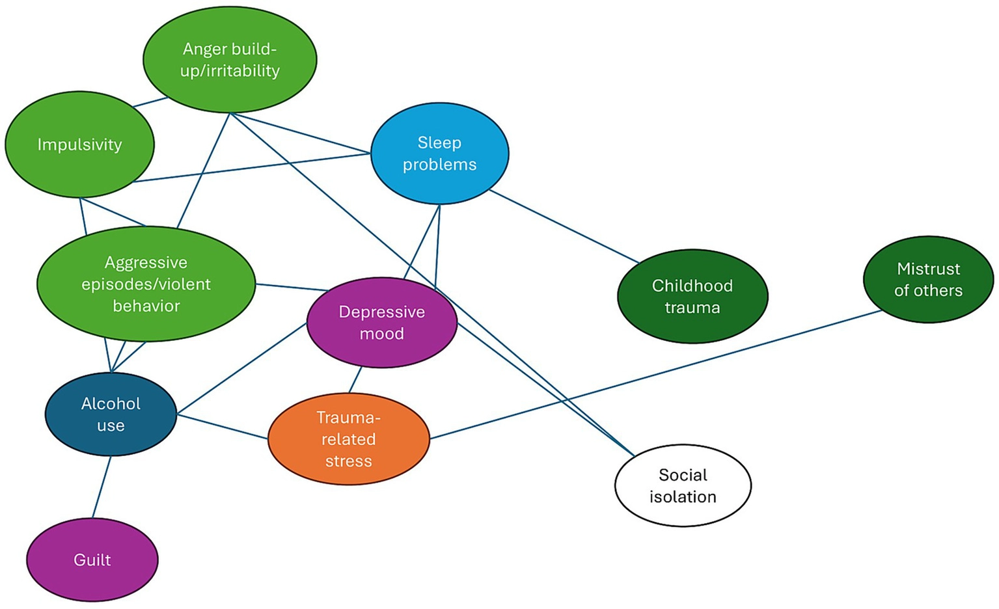
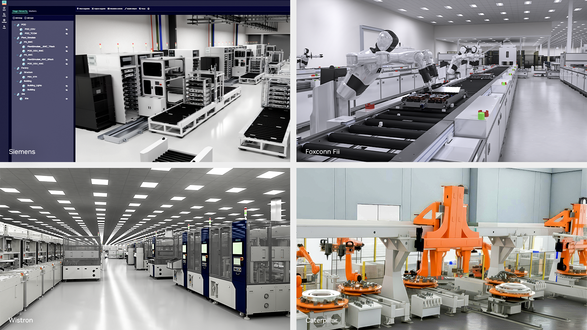

Teoria Sistêmica na
Administração
Da visão fragmentada ao pensamento integrado: compreendendo as organizações como sistemas vivos e abertos.
• Abertura: "Olá a todos. Hoje apresentaremos a Teoria Sistêmica na Administração, um dos pilares mais modernos e transformadores da gestão contemporânea."
• Contexto: "Durante décadas, as empresas foram vistas como grandes engrenagens mecanicistas (visão clássica de Taylor e Fayol), onde cada departamento funcionava isolado. A teoria sistêmica provou que empresas são organismos vivos, interdependentes e abertos ao meio ambiente."
• Tempo estimado: 1 a 2 minutos.
Integrantes da Equipe
Cauê Oliveira Viana
Matrícula: 202310921Claudio Ávila Rosa Filho
Matrícula: 202310661Enzo Cardoso Ribeiro
Matrícula: 202211355Gustavo Moreira dos Santos
Matrícula: 202310663Iago Campos de Melo
Matrícula: 202311585João Felipe Santos Matos
Matrícula: 202310926João Gabryell Lopes Santana
Matrícula: 202310927Kaike Santos dos Santos
Matrícula: 202311309Tharcizio Rubens Santos Mota
Matrícula: 202211373• "Apresentação dos componentes do grupo acadêmico: Cauê Oliveira Viana, Claudio Ávila Rosa Filho, Enzo Cardoso Ribeiro, Gustavo Moreira dos Santos, Iago Campos de Melo, João Felipe Santos Matos, João Gabryell Lopes Santana, Kaike Santos dos Santos e Tharcizio Rubens Santos Mota."
• "Agradecemos a presença do professor e dos colegas e damos início ao detalhamento dos objetivos."
• Tempo: 30s a 1 min.
Por que Estudar a Teoria Sistêmica?
Visão Holística
Capacidade de ver a 'floresta inteira' e não apenas as árvores isoladas. O gestor entende como todas as partes interagem para compor a totalidade.
Interdependência
Nenhum setor opera no vácuo. Uma promoção em Vendas reverbera imediatamente na Produção, Compras, Logística e Finanças.
Adaptabilidade
Em um ambiente volátil (V.U.C.A. / B.A.N.I.), a flexibilidade e a capacidade de aprender com o meio determinam a sobrevivência da firma.
• "Por que esse tema é obrigatório para gestores e líderes?"
• "1. Holismo: 'Holos' significa todo. Superamos a miopia funcional."
• "2. Interdependência: Cada departamento depende do outro. Decisões pontuais mal avaliadas geram efeitos colaterais graves."
• "3. Adaptabilidade: A capacidade da empresa de escutar o mercado e mudar de rota."
• Tempo: 1m30s.
Abordagem Sistêmica na Administração Geral
Visão Mecanicista
-
✗
Foco exclusivo em tarefas internas:
Obsessão pela padronização do posto de trabalho e eficiência interna isolada. -
✗
Departamentos isolados (Silos):
Comunicação engessada, barreiras departamentais e conflitos de metas. -
✗
Organização vista como sistema fechado:
Premissa ingênua de que o mercado e o ambiente externo não afetam as rotinas.
Visão Integrada
-
✓
Integração total dos subsistemas:
Processos de ponta a ponta, comunicação horizontal e colaboração ativa. -
✓
Interação constante com o ambiente:
Monitoramento diário de concorrentes, clientes, tecnologia e regulação. -
✓
Foco em objetivos globais:
A sobrevivência e o propósito da empresa inteira prevalecem sobre metas locais.
• "Aqui vemos a grande virada de chave histórica."
• "Na abordagem tradicional (Taylor, Fayol, Ford), a empresa era vista como uma engrenagem de relógio. Bastava afinar cada peça."
• "A abordagem sistêmica mostrou que somar departamentos eficientes isoladamente não garante o sucesso da empresa se eles não dialogarem."
• Tempo: 2 minutos.
O Fluxo Fundamental de um Sistema
Entradas
Matérias-primas, capital financeiro, talentos humanos, informações e demandas recebidas do ambiente externo.
Processamento
Operações industriais, linhas de montagem, algoritmos, decisões gerenciais e fluxos de trabalho produtivos.
Saídas
Produtos finais, serviços prestados, geração de receita, dividendos, impacto ambiental e reputação.
Feedback
Avaliação de desempenho, NPS, devoluções e pesquisas que retroalimentam e ajustam o início do fluxo.
• "Todo sistema dinâmico se baseia neste ciclo de 4 etapas."
• "Atenção especial ao Feedback (em destaque no cartão escuro): é ele que garante a autorregulação. Se o cliente rejeita o produto (saída), o feedback entra imediatamente como novo dado de entrada para corrigir a transformação."
• Tempo: 1m30s.
Hierarquização de Sistemas
Supersistema (Suprasistema)
Ambiente externo abrangente, mercado competitivo, políticas públicas, sociedade e contexto socioeconômico.
Sistema
A organização ou empresa considerada em sua totalidade focal, cultura, governança e identidade corporativa.
Subsistemas
Departamentos, divisões, setores operacionais, unidades de negócios e equipes internas especializadas.
• "Este slide ilustra a hierarquia em camadas (efeito matriosca):"
• "Supersistema: O ecossistema econômico onde a empresa navega."
• "Sistema: A empresa inteira como entidade única."
• "Subsistemas: Os órgãos internos (RH, TI, Comercial, Fábrica)."
• "Nenhum subsistema pode se julgar mais importante que o sistema maior."
• Tempo: 1m30s.
Aplicação dos Conceitos Sistêmicos
Sinergia
1 + 1 = 3O resultado do trabalho conjunto e integrado é superior à soma das atuações individuais isoladas.
Homeostase
Equilíbrio DinâmicoCapacidade de autorregulação e ajuste contínuo frente às perturbações e mudanças ambientais.
Entropia Negativa
NegentropiaImportação de energia, talentos e inovação externa para reverter a tendência natural de degradação e caos.
Equifinalidade
Múltiplas ViasAlcance do mesmo objetivo final e estratégico através de pontos de partida e rotas operacionais variadas.
• "Quatro conceitos teóricos de enorme aplicação prática:"
• "Sinergia: Cooperação transversal gera valor exponencial."
• "Homeostase: Como o corpo humano mantendo a temperatura, a empresa mantém a solidez mesmo em crises."
• "Entropia Negativa: Se você fechar a porta e não inovar, a empresa apodrece. Precisa absorver novas ideias continuamente."
• "Equifinalidade: Não existe bala de prata; há múltiplos caminhos para a liderança de mercado."
• Tempo: 2 minutos.
Organizações como Sistemas Abertos
⊞ Fronteiras Permeáveis
Troca contínua e bidirecional de informações, insumos e recursos com o ecossistema externo.
⚡ Dinamismo Constante
Reorganização e reciclagem frequente para preservação do equilíbrio frente às incertezas.
🌲 Ciclos de Eventos
A receita gerada no mercado retroalimenta a aquisição de novos insumos e talentos para sobrevivência.

• "A empresa moderna tem fronteiras permeáveis: as paredes dos escritórios caíram e o contato com fornecedores e clientes é instantâneo."
• "O diagrama de nós na imagem ilustra como um impacto em qualquer variável reverbera por toda a rede."
• Tempo: 1m30s.
Principais Teóricos do Pensamento Sistêmico
Ludwig von Bertalanffy
Biólogo austríaco que estabeleceu na década de 1950 que modelos universais regem sistemas vivos, físicos e sociais.
C. West Churchman
Filósofo e cientista da gestão. Aplicou o pensamento sistêmico e a pesquisa operacional à tomada de decisão empresarial.
Chester Barnard
Executivo de telecomunicações que conceituou a organização como um sistema cooperativo aberto baseado no consentimento humano.
• "Quem foram as mentes por trás dessas ideias?"
• "Bertalanffy forneceu a base científica transdisciplinar."
• "Churchman transportou a teoria para o planejamento estratégico e a governança corporativa."
• "Barnard uniu a teoria à liderança executiva real e à cooperação das pessoas."
• Tempo: 2 minutos.
Sistemas Abertos vs. Sistemas Fechados
Sistemas Fechados
- • Sem intercâmbio com o meio externo.
- • Funcionamento determinístico, rígido e mecânico.
- • Destino inexorável: máxima entropia e obsolescência.
- • Incapacidade de aprender com feedbacks externos.
Sistemas Abertos
- ✓ Troca constante de energia, insumos e dados.
- ✓ Alta capacidade de adaptação às mudanças e incertezas.
- ✓ Presença ativa de homeostase e entropia negativa.
- ✓ Autorreparação e evolução contínua ao longo do tempo.
• "Uma empresa que age como sistema fechado (ignorando clientes ou tecnologia) sofre entropia e quebra."
• "Sistemas abertos sobrevivem justamente porque são porosos ao ambiente."
• Tempo: 1m30s.
A Abordagem Sociotécnica

Subsistema Técnico
Tecnologia, equipamentos, infraestrutura física, softwares, algoritmos e processos operacionais padronizados.
Subsistema Social
Pessoas, relações interpessoais, liderança, cultura organizacional, motivação humana e competências comportamentais.
• "Estudo clássico do Tavistock Institute: a introdução de novas máquinas em minas britânicas inicialmente reduziu a produtividade porque desmantelou os laços sociais entre os trabalhadores."
• "Hoje na era da IA e Indústria 4.0, o princípio é o mesmo: não adianta tecnologia avançada se as pessoas não estiverem capacitadas e motivadas."
• Tempo: 2 minutos.
Gestão Sistêmica no Processo Decisório
Mapeamento Prévio de Impactos
Avaliação antecipada das consequências interdepartamentais antes da tomada de decisão.
Eliminação de Silos Operacionais
Derrubada de barreiras de comunicação e alinhamento de incentivos entre as áreas.
Alinhamento Dinâmico com o Mercado
Sincronização entre objetivos estratégicos internos e transformações do ambiente externo.
• "Como aplicar amanhã cedo no escritório?"
• "1. Mapear o efeito cascata de cada projeto."
• "2. Criar comitês multidisciplinares (acabar com feudos)."
• "3. Olhar para fora da empresa constantemente."
• Tempo: 1m30s.
Visão Sistêmica como Vantagem Competitiva
“A organização não é uma soma de partes isoladas, mas uma rede viva de interações contínuas.”
Pensamento Holístico • Integração Tecnológica e Humana • Adaptabilidade Contínua
• "Para finalizar: a Teoria Sistêmica nos ensina que gerenciar não é controlar peças estáticas, mas orquestrar relações vivas."
• "As empresas que sobrevivem e lideram não são as maiores, mas as que melhor compreendem sua condição de rede viva."
• "Muito obrigado pela atenção de todos! Abrimos agora para dúvidas e considerações."
• Tempo: 1 a 2 minutos.
Fontes e Fundamentação Bibliográfica
📚 Obras Fundamentais
- BERTALANFFY, L. von. Teoria Geral dos Sistemas: Fundamentos, Desenvolvimento e Aplicações. Petrópolis: Vozes, 1975.
- CHURCHMAN, C. West. The Systems Approach. New York: Dell Publishing, 1968.
- BARNARD, Chester. As Funções do Executivo. São Paulo: Atlas, 1979.
- KATZ, D.; KAHN, R. L. Psicologia Social das Organizações. São Paulo: Atlas, 1978.
- CHIAVENATO, Idalberto. Introdução à TGA. 10. ed. Rio de Janeiro: Atlas, 2020.
🌐 Estudos & Fontes Visuais
-
MIT Sloan Management Review
"What is Systems Thinking in Business?"
executive.mit.edu -
Frontiers in Psychology
"Systems Theory and Behavioral Interaction Networks"
frontiersin.org -
NVIDIA Omniverse Manufacturing
"Digital Twins & Cyber-Physical Systems"
nvidianews.nvidia.com
• "Aqui estão as referências clássicas e contemporâneas citadas ao longo da apresentação para quem desejar aprofundar a pesquisa."